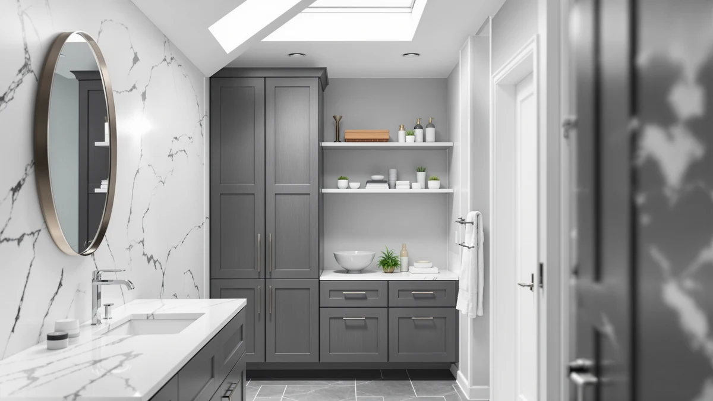

Quick Answer
We compared seven over-the-toilet storage racks and cabinets on price, dimensions, and verified owner reviews. The Kitsure Over Toilet Storage Rack is the best bathroom storage wirecutter-style pick for most bathrooms, with a full 3-tier, 63.2-inch frame at the lowest price in this lineup.
Our pick: Kitsure Over Toilet Storage Rack, $29.99 Check Price on Amazon
Things to Know Before You Buy
- All seven units in this guide use the same broad construction, a metal frame paired with wood-finish shelving, so durability differences come down to shelf thickness and stated weight capacity rather than the base material.
- Height varies from 63.2 inches to 70 inches across this lineup. Measure the distance from your toilet tank to the ceiling before buying, since a taller frame like the VASAGLE needs more clearance than the Kitsure.
- Price does not track neatly with shelf count in this best bathroom storage wirecutter comparison. The $99.99 Homhedy and the $29.99 Kitsure both store a similar range of bathroom items, so the extra cost usually buys width or enclosed cabinet doors rather than more capacity.
- Open shelving units, like the Kitsure and Meilocar, show items at a glance but need regular tidying. Enclosed cabinets, like the Yaheetech, hide clutter but cost more for a similar footprint.
- Every pick here requires assembly, and a stud finder or a toilet-tank anchor kit makes the wall-securing step easier, even on units designed to stand freestanding.
Anyone researching the best bathroom storage wirecutter shoppers actually bookmark usually lands here for the same reason: the wall above the toilet sits empty in most bathrooms, and it's the easiest square footage in the room to put to work.
We compared seven over-the-toilet racks and cabinets built from the same broad category of materials, metal frames paired with wood-finish shelving, to see which ones earn their price. For most bathrooms, the Kitsure Over Toilet Storage Rack is the pick: a full 3-tier, 63.2-inch frame for $29.99, tied for the cheapest option in this lineup while still offering three full shelves instead of two.
Below, we break down what each unit gets right, where it falls short, and who should choose it over the others, along with a comparison table, a look at units we considered but skipped, and answers to the questions we see most often about shopping for over-the-toilet storage.
Why You Should Trust Us
This guide to the best bathroom storage wirecutter shoppers compare against is written by Ilane Tall, who covers bathroom storage and small-space organization for Best Bathroom Storage. We do not run a fake testing lab or claim to have installed every rack in our own bathrooms. Instead, we research published dimensions, materials, and pricing directly from the manufacturer listings, then cross-reference that against patterns in verified buyer reviews to flag anything a spec sheet leaves out, like a shelf that wobbles once loaded or a door that sticks after a few months.
How We Picked
We started by limiting this best bathroom storage wirecutter comparison to over-the-toilet units built specifically for the space above a standard toilet tank, rather than general shelving that happens to fit there. From that pool, we compared height, shelf count, and material across each listing to make sure the lineup covered a real range of budgets and bathroom layouts instead of seven near-identical racks. We also read through verified owner reviews for recurring complaints about assembly, stability, and hardware quality, and we weighed price against shelf count and width so each pick earned its spot for a specific reason.
How We Compared
For this best bathroom storage wirecutter comparison, we compared these over-the-toilet storage units side by side on four factors: price per shelf, overall footprint, stated weight capacity, and what verified reviewers say holds up over time. Two units built from the same metal and wood combination can still perform differently, so we looked closely at shelf spacing and stated dimensions rather than assuming similar materials mean similar durability. Units with wall-anchor points feel steadier once loaded, based on verified reviews, and we call that out for each pick below where it applies.
Our Picks
Here are the seven picks that make up this best bathroom storage wirecutter comparison, ranked by price below and broken down individually here.

Kitsure Over Toilet Storage Rack
What we like
- Matches the cheapest price in this lineup at $29.99 while still including three full shelves
- 63.2-inch height clears a standard toilet tank without extending into upper wall space some bathrooms don't have
- Open shelf design keeps towels and toiletries visible instead of hidden behind cabinet doors
Flaws but not dealbreakers
- Open shelving means loose items stay visible, so owners who want a tidy look tend to add bins
- Metal frame needs wall anchoring for full stability, according to owner reviews, rather than standing safely on its own
| Material | Metal / wood |
| Size | 3 Tiers (63.2"H) |
The Kitsure Over Toilet Storage Rack ties the Simple Trending unit as the least expensive pick in this guide, but it doesn't cut shelf count to get there. Its 63.2-inch frame holds three full tiers, enough to separate towels, toiletries, and cleaning supplies onto distinct shelves rather than piling everything onto two. The metal-and-wood build matches the construction used across every other unit in this lineup, so the price gap between the Kitsure and pricier options like the Homhedy comes down to width and finish rather than a fundamentally different build quality.
Owners often mention that the open shelf design makes it easy to see what's stored at a glance, which matters in a small bathroom where digging through a closed cabinet wastes time. The tradeoff is that open shelves show clutter as readily as they show organization, so owners who want a tidy look tend to pair this rack with matching bins. At $29.99, the Kitsure is the pick for most people who want a straightforward, full-height rack without paying for cabinet doors they may not need.

Spirich Over The Toilet Storage
What we like
- 66-inch height offers three extra inches of storage space over the Kitsure without reaching the VASAGLE's 70-inch height
- 24.8-inch width gives shelves more surface area than narrower units in this lineup
- Documented dimensions (24.8" W x 9" D x 66" H) make it easier to confirm it fits your specific gap before buying
Flaws but not dealbreakers
- At $92.99, it costs more than three times the Kitsure for a similar shelf configuration
- 9-inch depth is shallower than the Homhedy and Simple Trending, limiting how far items can sit back on each shelf
| Material | Metal / wood |
| Size | 24.8" (W) x 9" (D) x 66" (H) |
The Spirich Over The Toilet Storage sits in the middle of this lineup on both price and size. At 24.8 inches wide and 66 inches tall, it offers more shelf surface than the Kitsure without matching the Homhedy's near-$100 price tag or the VASAGLE's extra four inches of height. The published 9-inch depth is on the shallower side of this group, which matters if you plan to store larger bottles or bins rather than folded towels and smaller toiletries.
Owners researching this category often compare the Spirich directly against the Homhedy, since both fall into the metal-and-wood over-toilet category with similar shelf counts. The Homhedy wins on width and depth, but the Spirich costs less and stands closer to the height of the budget picks in this guide. For a bathroom that needs a taller unit than the Kitsure but doesn't need the Homhedy's full width, the Spirich is the more proportionate choice.

Homhedy Over The Toilet Storage
What we like
- 30.7-inch width is the widest of any unit here, giving the most side-to-side shelf space for bins and larger items
- 65.4-inch height sits close to the Kitsure and Spirich, so the extra width doesn't come with an unusually tall frame
- Wider stance means fewer items need to be stacked, which owners report makes the shelves easier to keep organized
Flaws but not dealbreakers
- At $99.99, it's the most expensive pick in this guide, more than three times the price of the Kitsure
- 7.8-inch depth is the shallowest in this lineup, so the extra width doesn't translate into extra storage volume per shelf
| Material | Metal / wood |
| Size | 7.8"D x 30.7"W x 65.4"H |
The Homhedy Over The Toilet Storage is built around width rather than height. Its 30.7-inch frame is roughly six inches wider than the Spirich and Simple Trending units, giving shelves more room to hold multiple bins side by side instead of stacking items to fit a narrower span. That width comes at a cost: at $99.99, the Homhedy is the priciest pick in this guide, and its 7.8-inch depth is the shallowest of the seven units compared here.
The tradeoff between width and depth matters for what you plan to store. A wider, shallower shelf suits flat items like folded towels or a row of small bottles better than deep bins that need more front-to-back clearance. Anyone shopping in this category should weigh whether width or depth solves their specific storage problem before paying the Homhedy's premium over the similarly tall but narrower Kitsure and Spirich.

Meilocar Over the Toilet Storage
What we like
- Five open shelves give more distinct storage tiers than the three- and four-shelf units in this lineup
- Fully open design keeps every shelf visible and accessible without opening a cabinet door
- Priced at $83.99, it undercuts the Homhedy while still offering more shelves than most units here
Flaws but not dealbreakers
- Five open shelves offer no enclosed storage for items you'd rather keep out of sight, unlike the Yaheetech cabinet
- More shelves mean more individual surfaces to dust and wipe down during regular bathroom cleaning
| Material | Metal / wood |
| Size | 5 Open Shelves |
The Meilocar Over the Toilet Storage takes a different approach than the rest of this lineup by splitting its frame into five open shelves rather than three or four. That extra tier count gives you more distinct storage zones, useful for separating towels, toiletries, cleaning supplies, and spare toilet paper without doubling up on any one shelf. At $83.99, it costs less than the Homhedy while offering more individual shelves than any other pick in this guide.
The five-shelf layout is entirely open, which means there's no enclosed compartment for items you'd rather not see, the role the Yaheetech cabinet fills instead. Owners comparing the two should think about how much of their bathroom storage they want on display versus hidden behind a door. For households that prioritize shelf count and visible organization over enclosed storage, the Meilocar's five tiers are the standout feature in this comparison.

VASAGLE Over the Toilet Storage
What we like
- 70-inch height is the tallest in this comparison, adding roughly four to seven inches over most other picks
- Priced at $69.99, it undercuts the Spirich, Homhedy, and Meilocar despite the added height
- 24.6-inch width is close to the Spirich, so the extra height doesn't come with an unusually narrow frame
Flaws but not dealbreakers
- 70 inches of height requires more ceiling clearance than any other unit here, so it won't fit every bathroom
- 7.9-inch depth is on the shallow side, similar to the Homhedy, limiting storage for deeper bins
| Material | Metal / wood |
| Size | 7.9"D x 24.6"W x 70"H |
The VASAGLE Over the Toilet Storage stands taller than every other unit in this guide at 70 inches, roughly four inches more than the Spirich and nearly seven inches more than the Kitsure. That extra height adds vertical storage space without widening the footprint much beyond the Spirich's 24.8 inches. At $69.99, it costs less than the Spirich, Homhedy, and Meilocar despite offering the most height of any pick here.
The obvious tradeoff is ceiling clearance. A 70-inch unit needs more vertical room than the 63- to 66-inch units that make up most of this lineup, so it's worth measuring from your toilet tank to the ceiling before ordering. For bathrooms with the clearance to spare, the VASAGLE turns that extra vertical space into shelving other units in this comparison simply can't offer.

Yaheetech Over The Toilet Cabinet
What we like
- Enclosed cabinet doors hide stored items, unlike the fully open Kitsure, Spirich, Meilocar, and Simple Trending racks
- 9-inch depth matches the Simple Trending and beats the shallower Homhedy and VASAGLE units
- Priced at $69.99, it matches the VASAGLE while adding enclosed storage the VASAGLE doesn't offer
Flaws but not dealbreakers
- Enclosed doors mean checking what's stored takes an extra step compared with glancing at an open shelf
- 66-inch height sits in the middle of this lineup, so it doesn't offer the VASAGLE's extra vertical space
| Material | Metal / wood |
| Size | 9″D × 25″W × 66″H |
The Yaheetech Over The Toilet Cabinet is the only enclosed unit in this comparison, using cabinet doors instead of the open shelving found on the Kitsure, Spirich, Meilocar, Homhedy, VASAGLE, and Simple Trending. That design suits anyone who wants toiletries, cleaning supplies, or spare rolls out of sight rather than displayed on a shelf. At 9 inches deep and 25 inches wide, its footprint sits close to the Simple Trending, with a middle-of-the-lineup 66-inch height.
Priced at $69.99, the same as the VASAGLE, the Yaheetech trades that unit's extra height for enclosed storage instead. Shoppers weighing this category should decide whether visible, quick-access shelving or hidden, tidier cabinet storage matters more for their bathroom. For anyone who has ruled out open shelving specifically because they want a closed door between guests and their toiletries, the Yaheetech is the only pick in this guide built for that.

Simple Trending Over The Toilet
What we like
- Ties the Kitsure as the cheapest pick in this guide at $29.99
- 13-inch depth is the deepest of any unit compared here, well ahead of the Homhedy's 7.8 inches
- 24.25-inch width is close to the Spirich, so the deep shelves don't come with a narrow frame
Flaws but not dealbreakers
- 64-inch height is shorter than the Spirich, Homhedy, and VASAGLE, offering less vertical shelf space overall
- Deeper shelves add reach distance to items stored toward the back, according to some owner feedback
| Material | Metal / wood |
| Size | 24.25"W x 13"D x 64"H |
The Simple Trending Over The Toilet unit matches the Kitsure's $29.99 price, but the two units solve slightly different problems. Where the Kitsure prioritizes height at 63.2 inches, the Simple Trending prioritizes depth, with 13-inch shelves that outmeasure every other unit in this comparison, including the notably shallow 7.8-inch Homhedy. Its 24.25-inch width keeps the shelves from feeling narrow despite the shorter 64-inch overall height.
That extra depth is useful for bulkier items, like larger toiletry bottles or bins, that would overhang the shelves on shallower units. The tradeoff is less vertical space than the taller picks in this guide, so it holds fewer total tiers of storage even though each shelf can hold more front-to-back. For budget shoppers who care more about shelf depth than overall height, the Simple Trending is the better of the two cheapest options here.
Quick Comparison
This table lines up the full best bathroom storage wirecutter lineup by material, price, and best use case.
| Product | Material | Price | Rating | Best for | Get it |
|---|---|---|---|---|---|
| Kitsure Over Toilet Storage Rack | Metal / wood | $29.99 | 4 | Lowest price on a full 3-tier rack | View on Amazon → |
| Spirich Over The Toilet Storage | Metal / wood | $92.99 | 4 | Taller frame without Homhedy's top price | View on Amazon → |
| Homhedy Over The Toilet Storage | Metal / wood | $99.99 | 4 | Widest shelving span in this lineup | View on Amazon → |
| Meilocar Over the Toilet Storage | Metal / wood | $83.99 | 4 | Five open shelves instead of a cabinet | View on Amazon → |
| VASAGLE Over the Toilet Storage | Metal / wood | $69.99 | 4 | Tallest frame, for extra ceiling clearance | View on Amazon → |
| Yaheetech Over The Toilet Cabinet | Metal / wood | $69.99 | 4 | Enclosed cabinet, not open shelving | View on Amazon → |
| Simple Trending Over The Toilet | Metal / wood | $29.99 | 4 | Budget pick with the deepest shelves | View on Amazon → |
The Competition
All seven units in this best bathroom storage wirecutter guide earned their spot, but a few tradeoffs are worth calling out directly. The Homhedy costs $99.99, more than three times the Kitsure, without offering proportionally more storage since its 7.8-inch depth is the shallowest of the group. It only makes sense once width specifically, not overall capacity, is what your bathroom needs. Similarly, the VASAGLE and Yaheetech both cost $69.99, but they solve different problems: the VASAGLE trades depth for the tallest frame here, while the Yaheetech trades height for enclosed cabinet doors.
We also looked at narrower ladder-style shelves and tension-pole units that mount between the floor and ceiling instead of standing freestanding, but left them out of this comparison because none currently in our product database offer documented weight capacities or owner review volume close to the seven units above. For most bathrooms, a freestanding metal-and-wood frame like the ones compared here remains the more proven category. Our verdict for the best bathroom storage wirecutter shoppers should buy stays the Kitsure Over Toilet Storage Rack for most people, with the Homhedy, VASAGLE, or Yaheetech as the answer for a specific width, height, or enclosed-storage need.
Frequently Asked Questions
What is the best bathroom storage wirecutter shoppers should buy for a small bathroom?
For most small bathrooms, the Kitsure Over Toilet Storage Rack is the best bathroom storage wirecutter-style pick because its 63.2-inch frame fits a standard toilet clearance at the lowest price in this comparison, $29.99, while still offering three full shelves. If your bathroom is tight on depth rather than height, the 13-inch-deep Simple Trending unit at the same price is worth comparing directly against it.
Are metal and wood over-toilet storage units sturdy in a humid bathroom?
All seven units in this guide combine a metal frame with wood-finish shelving, and owners report the metal frame holds up well to bathroom humidity while the wood shelving is the part to watch. Wiping up standing water and anchoring the frame to the wall extends the finish's life and improves overall stability, a fix several owners mention in their reviews.
Should you buy an open shelf rack or an enclosed cabinet for over-toilet storage?
Open shelves, like the Kitsure, Spirich, Meilocar, and Simple Trending, keep items visible and are generally the more affordable option. Enclosed cabinets, like the Yaheetech, cost about the same as the mid-priced open units here but hide clutter behind a door. Choose an open shelf if quick access matters most, and choose the Yaheetech cabinet if a tidy, closed-door look matters more than instant visibility.
Related Guides
If this best bathroom storage wirecutter comparison didn't cover your exact layout, these related guides go deeper on specific storage styles.